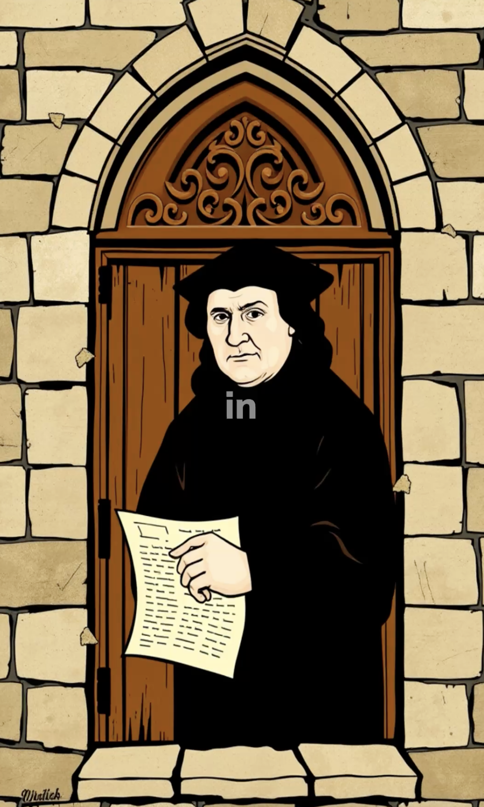

Starting fresh: a simple portfolio + blog
I rebuilt this website using plain HTML and CSS. No frameworks, just the essentials. The goal was to keep things fast, minimalist, and easy to maintain.
The homepage focuses on a short intro, a few projects, and links to get in touch. The blog is equally simple: a list of posts and a clean reading experience.
If you’re curious how it’s organized, check the repository—each page is a small, focused file and styles live in styles/main.css.